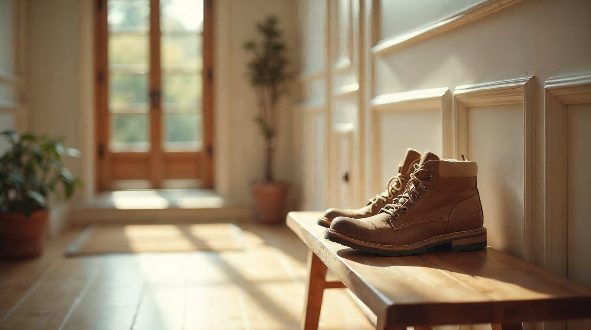
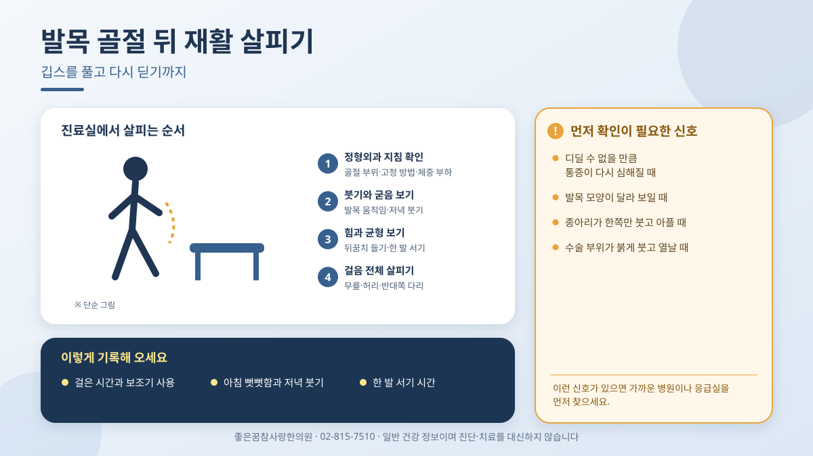

이종호 한의사 감수좋은꿈참사랑한의원 대표원장 (한의사 면허번호 19769)발행 2026-11-26 · 수정 2026-11-26
이 글의 차례
몇 주 만에 깁스를 풀던 날, 오랜만에 본 발목이 낯설게 느껴집니다. 종아리는 눈에 띄게 가늘어졌고, 발목은 퉁퉁 부어 있으며, 발을 바닥에 디디려니 겁부터 납니다. 뼈는 붙었다는데 왜 걷는 것이 이렇게 어색한지 당황스러운 순간입니다.
진료실에서 발목 골절 뒤 재활 중인 분들을 뵈면 비슷한 말씀을 하십니다. 뼈가 붙었다는 말에 안심했는데, 막상 걸어 보니 발목이 굳어 있고 저녁이면 붓는다고요. 뼈가 붙는 것과 발목이 예전처럼 움직이는 것 사이에는 꽤 긴 다리가 놓여 있습니다.
그 다리를 건너는 동안 필요한 것은 조급함이 아니라 순서입니다. 붓기를 다스리고, 굳은 관절을 조금씩 풀고, 빠진 근육을 채우고, 마지막으로 균형 감각을 되찾는 순서입니다. 이 순서를 알고 있으면 하루하루의 불편이 덜 막막하게 느껴집니다.
이 글은 골절을 치료한 정형외과의 안내를 대신하지 않습니다. 언제부터 체중을 실을지, 보조기를 언제 벗을지는 엑스레이로 뼈의 상태를 확인한 선생님이 정하는 것이 원칙이고, 그 곁에서 함께 챙길 수 있는 부분을 정리했습니다.
발목 골절은 어떤 부상인가요
발목 골절은 정강이뼈와 종아리뼈의 아래 끝, 흔히 복사뼈라고 부르는 부분이 부러지는 경우가 많습니다. 계단에서 발을 헛디디거나, 빙판에서 미끄러지거나, 운동 중 발목이 크게 꺾이면서 생깁니다. 골절과 함께 주변 인대가 다치는 경우도 흔합니다.
뼈가 어긋나지 않았다면 깁스나 보조기로 고정해 붙기를 기다리고, 어긋났거나 관절면이 맞지 않으면 금속판과 나사로 고정하는 수술을 하기도 합니다. 어떤 방법으로 치료했는지에 따라 재활의 속도와 주의할 점이 달라집니다.
그래서 재활을 시작할 때는 "발목을 다쳤다"보다 "어느 뼈가, 어떻게 부러져서, 무엇으로 고정했는지"를 아는 것이 중요합니다. 정형외과에서 들은 설명을 짧게라도 적어 두시면 다른 곳에서 진료를 받으실 때도 이야기가 정확해집니다.
왜 뼈가 붙은 뒤에도 붓고 뻣뻣할까요
깁스로 몇 주 동안 발목을 움직이지 않으면 관절을 감싼 관절막과 인대가 짧아지고 뻣뻣해집니다. 근육은 쓰지 않는 동안 빠르게 가늘어지고, 특히 종아리 근육이 줄어들면 발끝으로 서거나 계단을 오르는 힘이 약해집니다.
붓기는 다리의 혈액과 림프가 위로 올라가는 힘과 관련이 있습니다. 종아리 근육은 걸을 때마다 펌프처럼 아래쪽의 체액을 위로 밀어 올리는데, 이 근육이 약해지고 걷는 시간이 줄면 체액이 발목 주변에 고이기 쉽습니다. 그래서 오래 서 있던 날 저녁에 붓기가 늘어납니다.
또 하나 놓치기 쉬운 것이 균형 감각입니다. 발목 인대와 관절 주변에는 몸의 위치를 느끼는 감각 수용체가 있는데, 다치고 오래 쓰지 않으면 이 감각이 둔해집니다. 평평한 길은 괜찮은데 울퉁불퉁한 길에서 발목이 불안한 느낌이 드는 이유입니다.
깁스를 푼 뒤 시기별로 무엇이 달라지나요
깁스나 보조기를 푼 직후에는 발목을 위아래로 움직이는 범위를 조금씩 넓히고, 붓기를 다스리는 데 집중합니다. 체중을 얼마나 실을지는 정형외과의 지침을 따르며, 목발을 함께 쓰는 경우가 많습니다.
체중을 온전히 실을 수 있게 되면 걷는 시간을 늘리고, 발끝 들기, 뒤꿈치 들기처럼 종아리 힘을 되찾는 운동을 더합니다. 이 시기에는 저녁 붓기와 아침 첫걸음의 뻣뻣함이 함께 오르내리는 경우가 많습니다.
걸음이 자연스러워진 뒤에는 한 발로 서기, 쿠션 위에서 균형 잡기처럼 균형 감각을 되살리는 연습이 중요합니다. 뛰기, 점프, 방향 전환이 많은 운동으로 돌아가는 시점은 정형외과 선생님과 상의해서 정하시는 것이 안전합니다.
금속판이나 나사를 넣은 경우에는 무엇이 다른가요
수술로 금속판과 나사를 넣었다면 피부 아래에 단단한 것이 만져지고, 신발이 닿는 자리가 쓸리거나 추운 날 시린 느낌을 말씀하시는 분이 있습니다. 수술 상처 주변 피부가 멍멍한 느낌도 흔합니다.
금속을 언제 뺄지, 그대로 둘지는 수술한 병원에서 경과를 보고 정합니다. 금속이 있는 동안에도 일상 재활은 대부분 이어 갈 수 있지만, 상처 주변이 붉게 붓거나 진물이 나면 그 부위를 건드리지 말고 수술한 병원에 먼저 연락해 주세요.
신발은 발목 뒤와 옆이 너무 딱딱하지 않고, 앞쪽이 넉넉한 것이 편합니다. 붓기가 있는 동안에는 저녁에 신발이 꽉 끼기 쉬우니, 끈이나 벨크로로 조절할 수 있는 신발을 고르시면 좋습니다.
발목 염좌가 오래가는 것과는 어떻게 다른가요
발목을 삐고 나서 오래 아픈 경우와 골절 뒤 재활은 겉으로는 비슷해 보입니다. 둘 다 붓고, 뻣뻣하고, 불안한 느낌이 남습니다. 하지만 골절은 뼈가 붙는 시간 동안 고정이 필요했기 때문에 관절의 굳음과 근육 빠짐이 더 뚜렷한 편입니다.
반대로 처음에 그냥 삔 줄 알고 지냈는데 몇 주가 지나도 특정 뼈 위를 누르면 콕 집히게 아프다면, 작은 골절이 있었던 것은 아닌지 정형외과에서 확인해 보시는 것이 좋습니다. 발목 바깥 복사뼈 끝, 발 바깥쪽 날의 중간 뼈가 흔히 확인하는 자리입니다.
발목 골절 재활에서 자주 헷갈리는 것
첫째, 뼈가 붙었으니 이제 끝났다는 생각입니다. 엑스레이에서 뼈가 붙었다는 것은 큰 산 하나를 넘었다는 뜻이지, 발목이 예전처럼 움직인다는 뜻은 아닙니다. 굳은 관절과 빠진 근육은 뼈가 붙은 뒤부터 본격적으로 되찾아야 합니다.
둘째, 붓기가 있으면 움직이면 안 된다는 생각입니다. 붓기가 심할 때는 쉬는 것이 맞지만, 허락된 범위 안에서 발목과 종아리를 움직이는 것은 오히려 고인 체액을 위로 올려 보내는 데 도움이 됩니다. 쉬는 것과 움직이는 것을 번갈아 하는 것이 요령입니다.
셋째, 아프지 않으면 다 나은 것이라는 생각입니다. 통증이 줄어도 한 발로 서는 시간이 반대쪽보다 훨씬 짧다면 균형 감각은 아직 돌아오는 중입니다. 이 차이를 남겨 둔 채 운동으로 돌아가면 다시 발목을 접질리기 쉬우니, 양쪽을 비교해 보는 습관을 들여 보세요.

왜 무릎과 허리까지 불편해질까요
다친 발목을 아끼는 동안 우리 몸은 다른 곳으로 부담을 옮깁니다. 목발을 짚으면 손목과 어깨에 힘이 들어가고, 한쪽 다리로 버티는 시간이 늘면 반대쪽 무릎과 엉덩이가 먼저 지칩니다. 걸음이 기울면 허리도 그 기울기를 따라 긴장합니다.
그래서 발목 재활 중에 "발목은 나아지는데 이제 허리가 아프다"는 말씀을 자주 듣습니다. 이럴 때는 발목만이 아니라 걸음 전체를 함께 봐야 합니다. 양쪽 보폭과 디딤 시간이 비슷해지면 다른 곳의 부담도 함께 줄어드는 경우가 많습니다.
먼저 이렇게 여쭙니다
처음 오시면 저는 대략 이런 순서로 여쭙니다. 미리 생각해 오시면 이야기가 훨씬 수월해집니다.
- 언제, 어떻게 다치셨고 어느 뼈가 부러졌다고 들으셨나요?
- 수술을 하셨나요, 깁스나 보조기로 고정하셨나요?
- 깁스를 푼 날짜와 정형외과에서 받은 체중 부하 지침은 무엇인가요?
- 지금 목발이나 보조기 없이 걸을 수 있는 거리는 어느 정도인가요?
- 아침 첫걸음과 저녁 붓기는 어떤가요?
- 무릎, 허리, 반대쪽 발목에 새로 생긴 불편이 있나요?
- 드시는 진통제나 다른 지병 약이 있나요?
정확하지 않아도 괜찮습니다. 정형외과에서 들은 내용 몇 줄과 하루 걸음의 느낌만 말씀해 주셔도 지금 어느 단계인지 함께 가늠할 수 있습니다.
일상에서 먼저 해 볼 수 있는 것
붓기와 굳음은 하루 안에서 계속 오르내립니다. 오래 서 있거나 오래 앉아 있는 시간을 줄이고, 틈틈이 발목을 움직여 주는 것이 가장 기본입니다.
- 앉아 있을 때 발목을 위아래로 천천히 20번씩 움직이기
- 저녁에는 다리를 심장보다 조금 높게 올리고 쉬기
- 정형외과에서 허락한 범위 안에서 걷는 시간을 하루 조금씩 늘리기
- 체중을 실을 수 있게 되면 벽을 짚고 뒤꿈치 들기 연습하기
- 걸음이 안정되면 식탁을 짚고 한 발로 서기를 짧게 해 보기
- 계단은 난간을 잡고 한 칸씩, 내려갈 때 특히 천천히
발목을 손으로 원을 그리듯 돌리는 연습도 좋습니다. 처음에는 범위가 작아도 괜찮습니다. 따뜻한 물에 발을 담근 뒤에 하면 덜 뻣뻣하게 느껴지시는 분이 많은데, 수술 상처가 아직 아물지 않았다면 물에 담그기 전에 병원에 확인하세요.
통증이 무섭다고 다친 발을 계속 아끼면 걸음이 한쪽으로 기울고, 반대쪽 무릎과 허리에 부담이 쌓입니다. 특히 계단을 내려갈 때 다친 발을 짧게 딛고 반대쪽 다리로 버티는 습관이 오래 남기 쉬우니, 난간을 잡고 양쪽 발에 고르게 체중을 싣는 연습을 해 보세요.
거울 앞에서 걸어 보거나 가족에게 걸음을 봐 달라고 해서, 양쪽 보폭과 디딤 시간이 비슷한지 확인해 보세요.
뼈가 붙는 데는 영양도 필요합니다. 끼니마다 단백질 반찬을 곁들이고, 우유나 두부, 멸치처럼 칼슘이 든 음식을 챙기며, 낮에 잠깐이라도 햇볕을 쬐어 보세요. 뼈가 약하다는 말을 들으셨다면 골밀도 관리도 함께 상의하시면 좋습니다.
한의원에서 함께 살필 수 있는 경우
- 깁스를 푼 뒤 저녁마다 발목이 붓고 무거운 경우
- 발목이 뻣뻣해 쪼그려 앉기나 계단 내려가기가 어려운 경우
- 다친 쪽을 아끼느라 반대쪽 무릎, 허리, 엉덩이가 뻐근한 경우
- 종아리와 발바닥이 단단하게 뭉쳐 걸음이 무거운 경우
- 평평하지 않은 길에서 발목이 불안하게 느껴지는 경우
좋은꿈참사랑한의원에 오시면 먼저 아래 '먼저 확인이 필요한' 신호가 없는지부터 봅니다. 그다음 맥을 짚고, 발목의 붓기와 움직이는 범위, 종아리와 발바닥의 긴장, 걸음걸이와 한 발 서기를 함께 살핍니다.
진찰한 내용을 바탕으로 발목 주변과 종아리의 긴장을 푸는 침, 온열 관리, 무릎과 허리의 부담을 다루는 진료, 집에서 할 균형 연습 안내 가운데 지금 단계에 맞는 것을 정합니다. 수술 상처나 금속이 있는 자리는 피하고, 정형외과의 지침을 먼저 따릅니다.
회복이 더디고 기운이 떨어졌다면 한약 상담을 함께 할 수 있습니다. 이때는 드시는 약을 모두 확인하고 신중하게 정합니다. 정형외과의 경과 확인은 그대로 이어 가시고, 한의원 진료는 그 곁에서 나란히 간다고 생각해 주세요.
이렇게 기록해 오시면 상담이 쉬워집니다
발목 재활은 며칠 단위로는 변화가 잘 보이지 않습니다. 1~2주만 간단히 적어 보시면 흐름이 드러납니다.
- 하루 걸은 시간이나 걸음 수, 목발이나 보조기 사용 여부
- 아침 첫걸음의 뻣뻣함과 저녁 붓기 정도
- 뒤꿈치 들기나 한 발 서기를 몇 번, 몇 초 할 수 있었는지
- 계단, 언덕, 울퉁불퉁한 길에서의 느낌
- 반대쪽 다리나 허리에 새로 생긴 불편
기록이 쌓이면 어떤 날 붓기가 늘었는지, 무엇을 한 다음 날 발목이 편했는지가 보입니다. 그것이 다음 일주일의 걸음 양과 운동을 정하는 기준이 됩니다.
발목 둘레를 재어 두는 것도 도움이 됩니다. 복사뼈 바로 위를 줄자로 같은 시각에 재어 양쪽을 비교해 보세요. 숫자로 붓기의 흐름을 보면 하루하루의 느낌에 덜 흔들리고, 정형외과 진료 때도 설명하기가 쉬워집니다.
다시 땅을 믿고 디디기까지
발목 골절 뒤 재활에서 가장 오래 남는 것은 의외로 통증보다 두려움입니다. 또 다칠까 봐 다친 발에 체중을 덜 싣게 되고, 그 습관이 회복을 더디게 만들기도 합니다. 그래서 조금씩 땅을 믿고 디디는 경험을 쌓는 것이 중요합니다.
오늘은 앉아서 발목을 스무 번 움직이고, 저녁에 다리를 올리고, 걸은 시간을 한 줄 적어 보세요. 그 한 줄이 쌓이는 만큼 발목도 다시 내 발목이 되어 갑니다. 다음에 오시면 그 기록부터 함께 펼쳐 보겠습니다.
이런 증상은 먼저 확인이 필요합니다
- 다친 자리를 디딜 수 없을 만큼 통증이 다시 심해지거나 발목 모양이 달라 보이는 경우
- 종아리가 한쪽만 붓고 아프거나 수술 부위가 붉게 붓고 열이 나는 경우
이런 신호가 있으면 한의원보다 가까운 병원이나 응급실을 먼저 찾으세요.
함께 읽으면 좋은 글
- 발목을 자주 접질리는 반복 발목 염좌와 발목 불안정은 어떻게 살피나요?
- 발목이 자꾸 꺾이고 불안한 만성 발목 불안정은 균형 감각부터 어떻게 다시 기르나요?
- 저녁마다 다리가 붓고 양말 자국이 깊게 남을 때, 부종은 무엇을 나눠 살피나요?
- 뼈가 약해졌다는 골다공증 진단을 받았을 때 생활과 한의원 진료는 어떻게 함께 살피나요?
- 예전에 발목을 자주 삐었는데 요즘 무릎과 허리가 불편하면 연관이 있나요?

여쭙는 것
- 언제, 어떻게 다치셨고 어느 뼈가 부러졌다고 들으셨나요?
- 수술을 하셨나요, 깁스나 보조기로 고정하셨나요?
- 깁스를 푼 날짜와 정형외과에서 받은 체중 부하 지침은 무엇인가요?
생활에서 해 볼 것
- 앉아 있을 때 발목을 위아래로 천천히 20번씩 움직이기
- 저녁에는 다리를 심장보다 조금 높게 올리고 쉬기
- 정형외과에서 허락한 범위 안에서 걷는 시간을 하루 조금씩 늘리기
한의원에서 함께 살필 것
- 깁스를 푼 뒤 저녁마다 발목이 붓고 무거운 경우
- 발목이 뻣뻣해 쪼그려 앉기나 계단 내려가기가 어려운 경우
- 다친 쪽을 아끼느라 반대쪽 무릎, 허리, 엉덩이가 뻐근한 경우
먼저 확인이 필요한 신호
- 다친 자리를 디딜 수 없을 만큼 통증이 다시 심해지거나 발목 모양이 달라 보이는 경우
- 종아리가 한쪽만 붓고 아프거나 수술 부위가 붉게 붓고 열이 나는 경우
한눈에 보는 표
| 구분 | 핵심 |
|---|---|
| 여쭙는 것 | 언제, 어떻게 다치셨고 어느 뼈가 부러졌다고 들으셨나요? 수술을 하셨나요, 깁스나 보조기로 고정하셨나요? |
| 생활에서 해 볼 것 | 앉아 있을 때 발목을 위아래로 천천히 20번씩 움직이기 저녁에는 다리를 심장보다 조금 높게 올리고 쉬기 |
| 한의원에서 함께 살필 것 | 깁스를 푼 뒤 저녁마다 발목이 붓고 무거운 경우 발목이 뻣뻣해 쪼그려 앉기나 계단 내려가기가 어려운 경우 |
| 먼저 확인이 필요한 신호 | 다친 자리를 디딜 수 없을 만큼 통증이 다시 심해지거나 발목 모양이 달라 보이는 경우 종아리가 한쪽만 붓고 아프거나 수술 부위가 붉게 붓고 열이 나는 경우 |
자주 묻는 질문
깁스를 풀었는데 발목이 아직 많이 부어 있어요. 괜찮은 건가요?
깁스를 푼 뒤 몇 주에서 몇 달까지 저녁 붓기가 이어지는 경우가 흔합니다. 다만 붓기가 점점 심해지거나 종아리까지 붓고 아프면 정형외과에 먼저 알리시길 권합니다.
언제부터 정상적으로 걸어도 되나요?
체중을 얼마나 실을지는 엑스레이로 뼈 상태를 확인한 정형외과 선생님이 정하는 것이 원칙입니다. 그 지침 안에서 걷는 시간을 조금씩 늘려 가시면 됩니다.
금속판이 들어 있는데 침 치료를 받아도 되나요?
수술 상처와 금속이 있는 자리는 피하고, 주변 근육과 함께 불편한 곳을 중심으로 정합니다. 수술 날짜와 병원의 지침을 먼저 확인한 뒤 진료 방향을 정합니다.
다친 뒤로 평평하지 않은 길에서 발목이 불안해요.
오래 고정하는 동안 발목의 위치 감각이 둔해져서 생기는 경우가 많습니다. 정형외과에서 허락한 시기부터 한 발 서기 같은 균형 연습을 조금씩 해 보시고, 진료 때 함께 확인하겠습니다.
발목 골절 뒤 한약을 먹어도 되나요?
드시는 진통제와 다른 약을 모두 확인하고 신중하게 정합니다. 회복이 더디고 기운이 떨어진 경우 상담할 수 있으며, 정형외과의 경과 확인은 그대로 이어 가시길 권합니다.
좋은꿈참사랑한의원은 재진 때 지난번 이야기부터 이어서 여쭙니다. 진료시간과 예약은 오시는 길에서 확인하세요.
어디서 상담받을 수 있나요?
좋은꿈참사랑한의원은 서울 동작구 만양로2길 2 신성빌딩 3층·5층(서울 동작구 상도동, 7호선 상도역 3번 출구 근처)에 있습니다. 한의사 3명(이종호 대표원장, 조영기 수석진료원장, 정원영 진료원장)이 진료합니다. 진료시간은 평일 09:30~20:00(점심 13:00~14:00), 토·일·공휴일 09:30~15:00이며, 방문 전 전화로 확인을 권합니다. 예약은 네이버 예약, 카카오톡 상담, 전화 02-815-7510로 받습니다.
이 글은 일반적인 건강 정보이며 개인의 진단이나 치료를 대신하지 않습니다. 증상이 있거나 복용 중인 약이 있다면 진료를 통해 확인하세요. 치료 효과는 개인마다 다를 수 있습니다.
작성 기준: 일반적으로 알려져 있는 건강 정보를 참고해 정리했습니다(대표원장 감수). 증상 기록은 1~2주 동안 하루 1회, 비슷한 시간에 적어 오시면 지난 상태와 비교하기 쉽습니다.